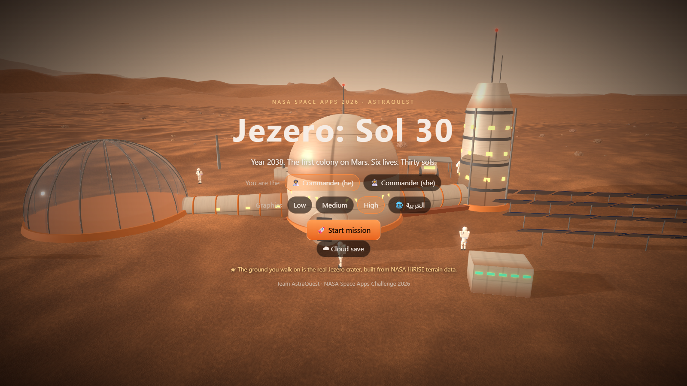
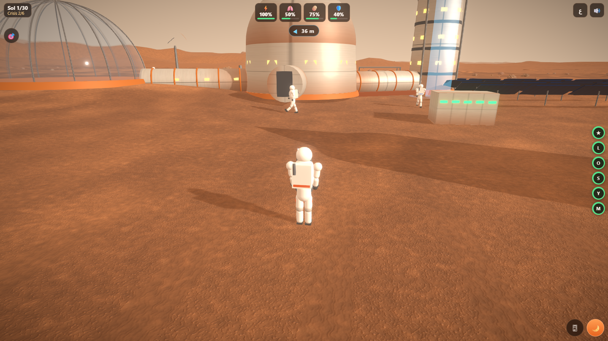
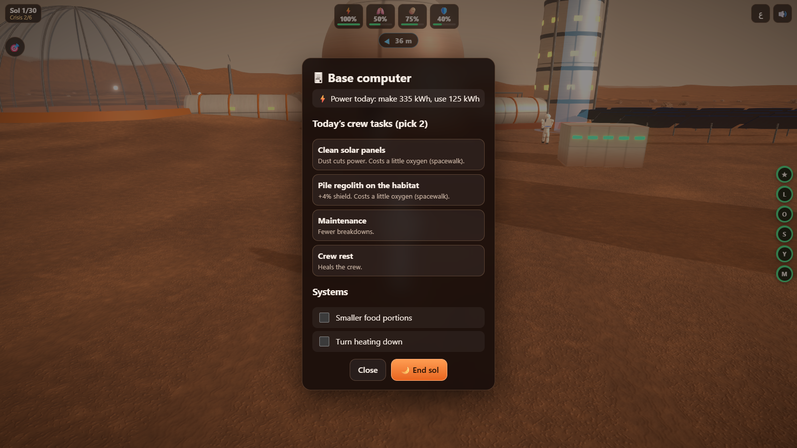
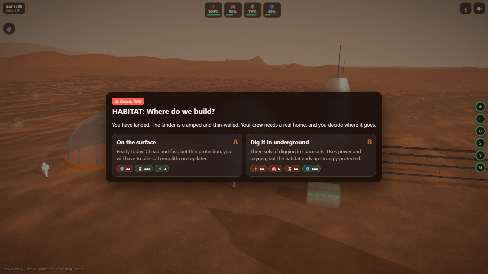
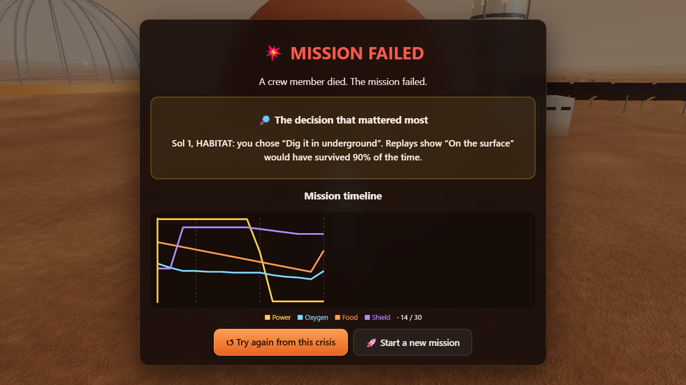
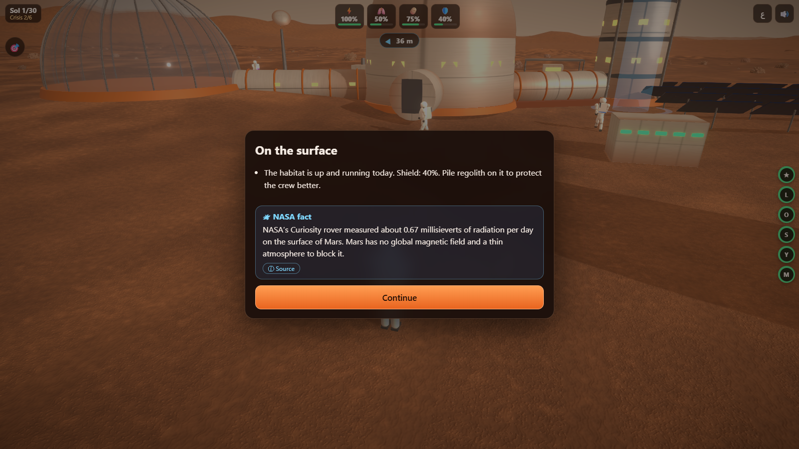

NASA Space Apps Challenge 2026
A 3D Mars colony game built on real NASA data. Keep six astronauts alive for thirty sols.
Team AstraQuest · Members Rowina
Challenge Build a Junior Astronaut Mission Trainer
The challenge
Every mission plan is a chain of trade-offs. Students aged 10–14 should feel them, not just read about them.
1
Power for ice means less for heat. A risky walk saves the base but costs health.
2
Every number has a source. Simplifications are labelled honestly.
3
A child opens a link and starts playing, in Arabic or English.

Our answer
How it plays

1Give crew orders and switch systems. Power, Oxygen, Food and Shield move with every choice.

2A dust storm, a broken rover, a delayed solar-storm warning. Some you act out yourself in the world.

3The game replays the other choices and shows the one that mattered most. Retry from there.

Built on NASA open data
HiRISE + CTX
Real Jezero terrain around Perseverance's landing site
Perseverance
NASA's 3D model and wind recorded by its microphone
0.816 kg
Oxygen per astronaut per day (NASA BVAD)
586 W/m²
Sunlight at Mars (NASA Mars Fact Sheet)
12 g/h
Oxygen made by MOXIE on Perseverance
0.67 mSv
Daily radiation measured by Curiosity RAD
29 sourced numbers, each with a Source button in the game.
Trade-offs you feel
→ Ice mining needs power, so the dust storm hits harder.
→ A surface habitat makes the solar storm deadly.
→ Crew who took risky walks get sick later.
→ You see it: dust on panels, wilting plants, regolith on the roof.
486 decision paths × 40 runs each
Random player
21.6%
Thoughtful player
91.3%
No single option wins on its own.
What's next
Next: a teacher mode with class statistics, more crises, and an Android app.
Play mistyrose-eland-246079.hostingersite.com
Code github.com/ElQammash/jezero-sol-30
Scan to play now